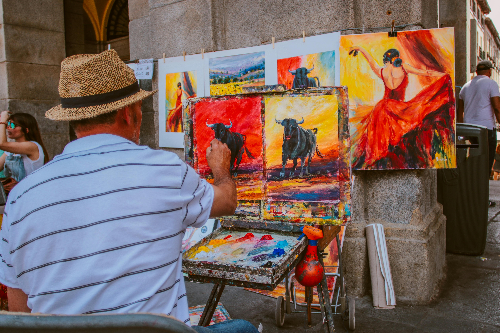

COLLECTION OF
FRANCE'S FINEST PAINTINGSImagine going back in time
Imagine going back in time

The Frans Hals Museum is Haarlem’s museum of fine arts. It houses the largest collection of Frans Hals paintings in the world, as well as works by other famous artists from Haarlem such as Judith Leyster, Cornelis van Haarlem and Jacob van Ruisdael. You’ll also discover an extensive collection of art from 1880 to the present day, including works by Isaac Israëls, Charley Toorop and Dana Lixenberg.
Discover 16th- and 17th-century, modern and contemporary art in two beautiful historical buildings in the old city centre.